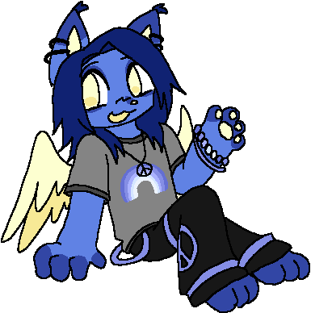
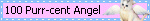

hii! you can just call me lynx. i'm a 19 y/o artist from midwest USA, currently just figuring out what i want to do in life. i love cats and going to shows/raves. the art i dabble in ranges from sewing to clay, though i mainly just draw digitally. i strive to make people smile ☺︎

- 🎮 playing - Nothing!
- 📺 watching - Digimon: Digital Monsters
- 🎶 listening - Ravefurrest Vol 1: Amen Breaks the Internet
- 📖 reading - Two Dark Reigns by Kendare Blake
- 🖋️ working - on a commission for a friend :3
last updated 10/17/25


i yap here!! click to dropdown